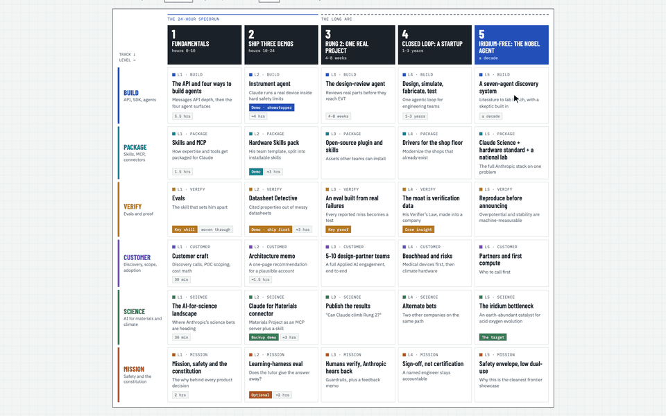

Stop Applying, Start Apprenticing
How to create a map of projects to make yourself relevant for your top role.

This is about a different way to go after a job you want: start apprenticing yourself to it before you apply. I call the plan for that a Shadow Apprentice Map.
It's about a 10-minute read. The prompt is in Part 4 if you just want to make one.
TL;DR
- The front door is crowded. Polishing a résumé and reading about the role is what everyone in line is doing.
- There's always a third door. Alex Banayan's idea: skip the line and find the side entrance. For a job, one way in is doing a small version of the work before anyone asks you to, which AI now makes possible in a day.
- A Shadow Apprentice Map is that plan, written down. Five levels, from 10 hours of fundamentals to a decade-long moonshot, and every card has to fit the role, the company and you.
- It changes your odds. You arrive with shipped work instead of enthusiasm, and the shipping itself makes luck: people see it, share it and open doors.
- One prompt draws the map. It's below, along with the map I made for a friend aiming at Anthropic's Applied AI team.
Part 1
The Front Door
Here's how most people apply for a job they really want.
They find the posting. They read it four times. They rewrite their résumé so the words "cross-functional" appear in it. They read the company blog, maybe watch a podcast with the CEO at 1.5x speed. They hit submit, refresh their inbox for two weeks, and if they get an interview, they spend the night before memorizing talking points about why they're "passionate about the mission."
Nothing about this is wrong. It's just what you're told to do. And that's the problem: it's exactly what you're told to do, so it's exactly what everyone else is doing too.
Picture the line outside a popular club. Everyone has the same outfit on. Everyone is holding the same résumé. The bouncer has about six seconds per person, so he's mostly looking for reasons to say no.
If you're lucky, you're already famous and you walk through the VIP entrance. Most of us aren't. So we wait in line and hope.
Part 2
The Third Door
Alex Banayan spent years as a college student trying to interview people like Bill Gates and Lady Gaga, which is not the kind of thing you get by standing in line. What he found is that a lot of them got started the same way. They didn't wait at the front door, and they didn't have the VIP pass. They went around the side.1
His version: there's always a third door. You jump out of line, run down the alley, knock on the kitchen door a hundred times, climb through a window. It's harder to find, and almost nobody else is using it. He tells the whole story in his talk at Google.
How do we make that interesting idea actionable in the age of AI?
Start with how people used to get jobs. For most of history, nobody applied to be a blacksmith. You hung around a blacksmith, swept up, held things, and slowly got trusted with hotter metal. By the time anyone called it a job, you'd already been doing it for years. Apprenticeship was the front door.
Modern hiring swapped that for a document and an interview. That's efficient, but it means most people now walk into a job having never done any of it, and the person hiring them has to guess.
The hard part of apprenticing yourself was always the master. Someone had to tell you what was worth learning and check whether you'd done it right. That's the part AI just made cheap. An agent can read a company's docs, blog and job posting in an hour, tell you what the team actually builds, and help you build a small version of it by tonight. The apprenticeship that used to take years can start this week.
So here's the side entrance: start doing the job before you have it. Not pretending you have it. Doing a small, honest, public version of it. Ship the demo the team would ship. Write the memo they'd write. Build the eval they'd want. Then show up with that.
This does two things at once, and the second one is sneaky.
First, it's a try-out for you. You find out whether you actually like the work before you've uprooted your life for it. A lot of dream jobs are dream jobs mostly from the outside.
Second, it makes luck. The entrepreneur Jason Roberts has a nice formula for this: your "luck surface area" is how much you do times how many people you tell.2 Someone in line has done nothing new and told nobody. Someone who has shipped three small projects in public has given the universe a lot more places to grab them: a recruiter sees a repo, an engineer on the team shares a demo, a stranger forwards the write-up.
Momentum compounds, too. The first demo is hard. The second one borrows half its code from the first. By the third, you're talking about the role in the past tense: "When I built X, I found Y."
You can't always find a third door. But you can build one: do a piece of the job, in public, before anyone gives it to you.
Which raises a practical question: which version of the job? For which company? Starting where? That's what the map is for.
Part 3
Meet the Shadow Apprentice
A shadow apprentice brings the old way back, without asking permission. You pick the role. You apprentice yourself to it in the open: learn what that team has to know, then build what that team would build. Nobody's supervising you, so you have to be your own master craftsman. That's the "shadow" part.
Blue Box: What's a Shadow Apprentice Map?
A one-page plan that turns three inputs (a job description, a person and a company) into five levels of work.
Levels 1 and 2 are a 24-hour speedrun: the fundamentals, then three small demos. Level 3 is one real project with real users, over a few weeks. Levels 4 and 5 are the long arc: a startup-sized product and a decade-sized moonshot.
The rule that makes it work: every card has to be relevant to the role, to the company and to the person. Miss one and it's cut.
Why bother with Levels 4 and 5 if the job is Level 1? Because the interview is partly a test of how big you think, and "here's the decade-long project I'd point your product at" is a much better answer to "where do you see yourself?" than "in a senior role." Also, frankly, because it's fun.
Why three checks? Because without them you get a generic "Learn AI in 30 Days" syllabus, which is just a fancier way to stand in line. The checks force the map to be about this role at this company for this human.
Part 4
The Prompt
I built the first one for a friend I'll call Connor. Here's the prompt, lightly cleaned up so you can reuse it. Give your agent the job description and the person's profile (LinkedIn, portfolio, writing) first.
Given the role, and given [name] is interested in [their focus], make me a "shadow apprentice map." Level 1: fundamentals they should know, from technical (SDK, API) to foundational (ethics, the company's constitution or values). Level 2: initial projects to ship, and why. Level 3: one robust project that gets real user feedback. Level 4: a product that could be a startup. Level 5: an agent that could win a Nobel Prize. Every branch must be relevant to the role, relevant to the company, and relevant to the person. If you need to, do deep research on the company and its work first, and save it as reference files. Make this legit: help them speedrun the role in 24 hours, with great projects to demo.
Then one round of edits, to make it something a person would actually use:
Make it more visual. Put levels across and tracks down, so each skill is its own card. Make the cards open one at a time. Include citations I can click. Keep it light mode. Replace the person's real name with a made-up one.
That's it. Two messages.
Part 5
How the Map Gets Made
The prompt is short, but the agent does a lot behind it. Three moves matter.
Move 1: research before writing. The agent sent out four sub-agents in parallel. One read Anthropic's mission, safety and constitution pages. One read the developer docs. One mapped Anthropic's AI-for-science work. One read everything Connor had published. Each saved a reference file, and the map was written from those files, not from the model's memory. This matters more than it sounds: model names, products and funding announcements had all changed in the past few months, and a map built on stale facts is worse than none.
Move 2: three checks on every card. Every card names the job-description line it proves, the company product or bet it connects to, and the part of the person's history it builds on.
Here's what that looks like on one card. Connor's Level 2 "Instrument agent" has Claude run a real lab device behind hard safety limits.
- Role: the job asks for demo environments and proofs of concept.
- Company: Anthropic's Model Hardware Standard, its newest bet on Claude driving physical machines.3
- Connor: he has an algae bioreactor at home with automated control. Nobody else in the interview pool has that demo.
Move 3: find the gap, then aim at it. Good research turns up a thesis, not just facts. For Connor it was this: every public Anthropic science case study was in biology or pharma, while its newest bets (the hardware standard, the Claude Science workbench and $150M for the Department of Energy's Genesis Mission) point at the physical world.345 Nobody had publicly shown Claude doing materials or hardware well. Connor is a materials and mechanical engineer. So the whole map points him at that hole.
A map should make one argument. If yours reads like a list of things to learn, the research didn't find the gap yet. Go back and ask the agent: "What is this company betting on that nobody has shown working yet, and why is this person suited to it?"
Part 6
Connor's Map
Here's the map in five stops. The interactive version has every card, the hour-by-hour schedule and the sources.
- 1
Fundamentals · hours 0–10
The API in depth, four ways to build agents, Skills and MCP, evals, customer discovery and cost math, and a close read of Claude's constitution. The best card: Connor once wrote an essay arguing that unrestrained "helpful, honest, harmless" AI hurts learning. The map has him prep a three-minute take on where the constitution answers that, and where it doesn't.
- 2
Ship three demos · hours 10–24
Datasheet Detective pulls cited properties out of messy material datasheets. A Hardware Skills pack turns his engineering templates into installable skills. The Instrument agent runs his bioreactor and refuses an out-of-limits command on camera. Each ships with a README, a 60-second video and an eval table.
- 3
One real project · 4–8 weeks
A design-review agent for small hardware teams, tested with 5 to 10 design partners. Every miss becomes an eval case. It ends with a product-feedback memo to Anthropic, which happens to be a line in the job description.
- 4
A startup · 1–3 years
"Closed Loop": design, simulate, fabricate and test as one agent loop. The moat is verification data. AI automates what's cheap to check, and in hardware, checking is the expensive part.
- 5
The Nobel agent · a decade
Seven agents and one human scientist, hunting for an iridium-free catalyst for green hydrogen. Iridium is one of the rarest metals on Earth, and the property that matters can be measured by a machine. A skeptical reviewer agent blocks any result that hasn't been reproduced.
That last level handed Connor his opening line. It's now the first thing on the map:
"Anthropic has shown Claude designing proteins. I want to help it discover a material, and I'd start with the iridium bottleneck in green hydrogen, because there verification can be automated and the payoff is decarbonizing heavy industry."
Compare that to "I'm passionate about the mission." One of these people is standing in line.
Part 7
So, Which Door?
The front door still works sometimes. But it asks you to be judged on a description of yourself. The third door lets you be judged on the work.
The Shadow Apprentice Map is just the third door with directions. Pick a role. Feed in the job description and yourself. Hold every card to the three checks. Then do the part most people skip: ship Level 2 before you apply. Twenty-four hours of focused work gets you three public demos and a story told in the past tense.
And if you mentor or hire people, run it the other way. Hand someone a map for your team. It's the clearest way I know to say "here's what great looks like here, for you specifically."
Worst case, you spend a day building things and find out you don't love the job. Best case, someone on the inside sees the work before they ever see your résumé.
Before you draw your map, ask:
- What is this company betting on that nobody has shown working yet?
- What's the strangest thing in my background that fits that bet? (Connor's was a bioreactor.)
- Which of my three Level 2 demos could a team member forward to their boss tomorrow?
- Who am I going to tell, and where?
Footnotes
- Alex Banayan, "The Third Door", Talks at Google. Also his book The Third Door (Currency, 2018). ↩Banayan set out as a student to learn how famous people got their start, and found the same pattern: they skipped the main line and the VIP line and found a side entrance through persistence and odd angles.
- Jason C. Roberts, "Increasing Your Luck Surface Area", Codus Operandi. ↩Luck isn't random if you widen the target: the amount of serendipity you get is roughly what you do times how many people you tell about it.
- Anthropic, "Model Hardware Standard research preview", Aug 2026. ↩A standard for letting Claude drive lab and industrial devices through drivers, plain-language device descriptions and enforced safety limits.
- MIT Technology Review, "Claude Science is Anthropic's newest flagship product", Jun 30 2026. ↩Anthropic's multi-agent research workbench for scientists, with a built-in reviewer agent.
- Anthropic, "$150M Genesis Mission commitment", Oct 2026. ↩Anthropic's commitment to the US Department of Energy's Genesis Mission for AI-driven science at national labs.
- The full map: Shadow Apprentice Map: Applied AI Associate, Oct 2026. Every card cites its sources.Thirty cards across five levels and six tracks, plus a 24-hour schedule and an interview kit. Connor is a made-up name.
Comments
Comments are saved as GitHub issues on the memos repo, so they stay public and I can read them. Highlight any passage to comment on it directly.
Loading comments…